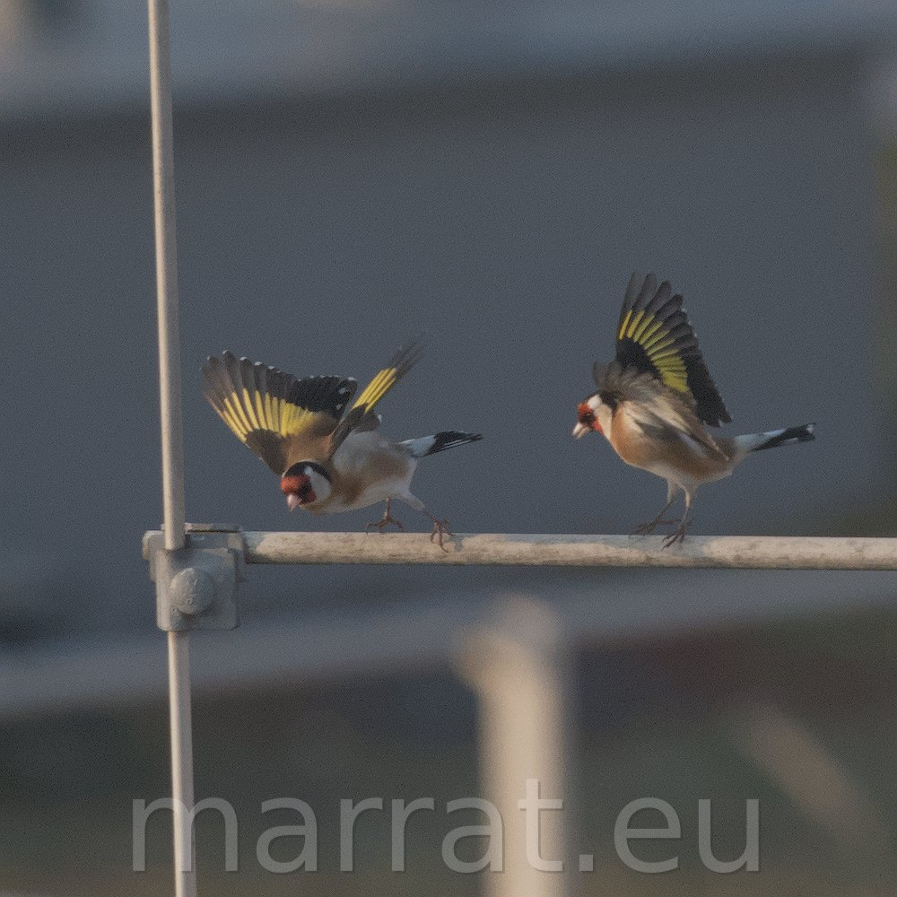
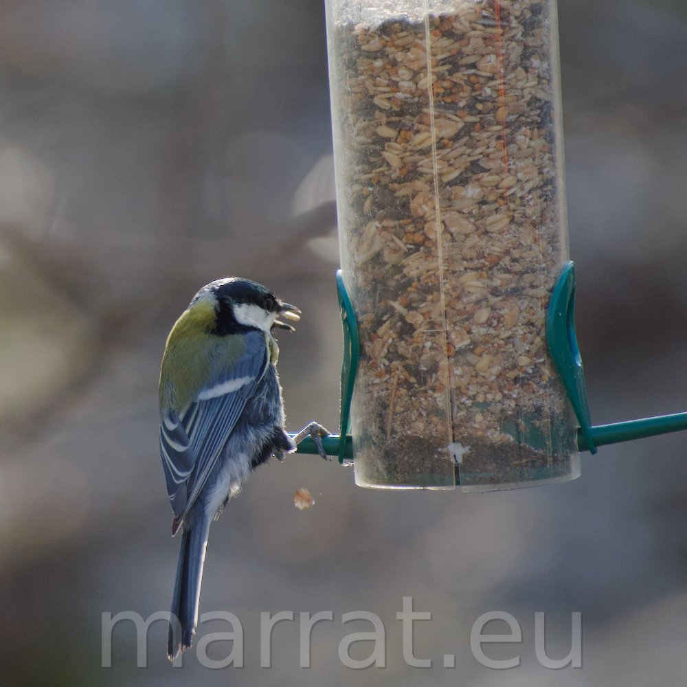
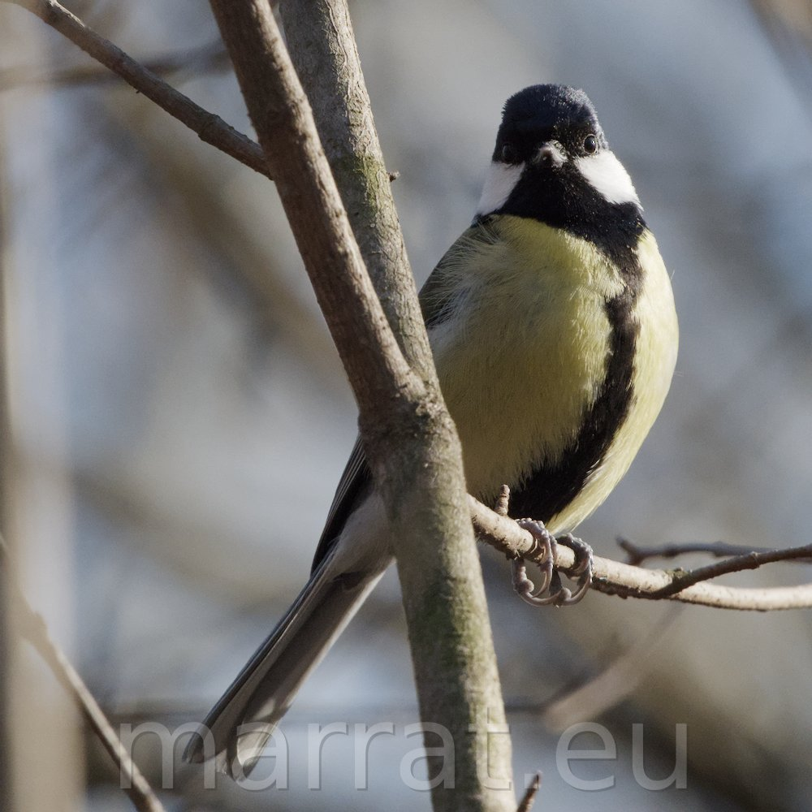
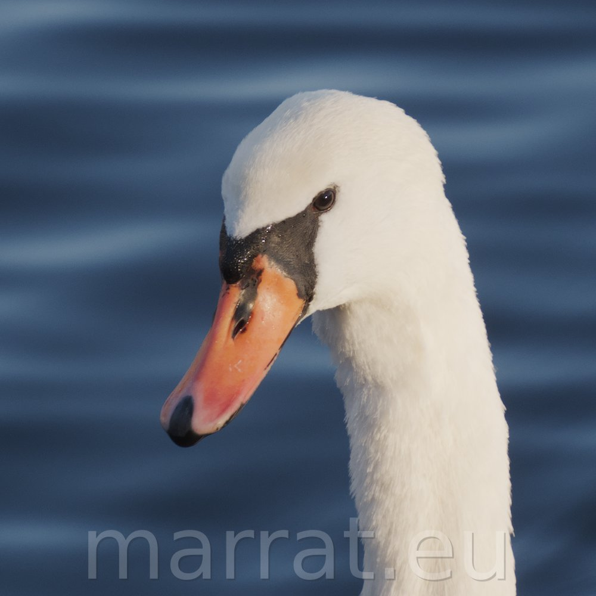
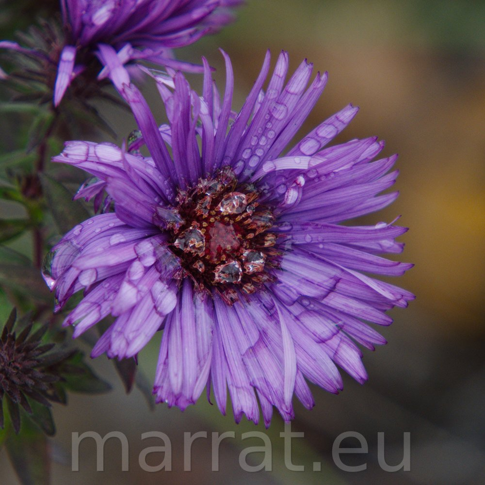

f/8.0 | 1/2000s | ISO 3200 | 600.0 mm
FUJIFILM X-T5 + FUJIFILM 150-600mm f/5.6-8
f/11.0 | 1/2000s | ISO 2500 | 600.0 mm
FUJIFILM X-T5 + FUJIFILM 150-600mm f/5.6-8

f/9.0 | 1/125s | ISO 400 | 55.0 mm
FUJIFILM X-T5 + FUJIFILM 18-55mm f/2.8-4
macro ring + magnifying lens

f/5.6 | 1/1250s | ISO 5000 | 300.0 mm
FUJIFILM X-T5 + FUJIFILM 70-300mm f/4-5.6

f/10.0 | 1/1000s | ISO 4000 | 600.0 mm
FUJIFILM X-T5 + FUJIFILM 150-600mm f/5.6-8

f/5.0 | 1/2000s | ISO 640 | 184.6 mm
FUJIFILM X-T5 + FUJIFILM 70-300mm f/4-5.6

f/? | 1/500s | ISO 400 | ? mm
FUJIFILM X-T5 + 7ARTISTANS 35mm f/0.95
f/? | 1/30s | ISO 320 | ? mm
FUJIFILM X-T5 + 7ARTISTANS 35mm f/0.95

f/6.3 | 1/500s | ISO 800 | 218.1 mm
FUJIFILM X-T5 + TAMRON 18-300mm f/3.5-6.3

f/6.3 | 1/320s | ISO 400 | 289.3 mm
FUJIFILM X-T5 + TAMRON 18-300mm f/3.5-6.3